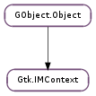

| Subclasses: | Gtk.IMContextSimple, Gtk.IMMulticontext |
|---|
| delete_surrounding(offset, n_chars) | |
| filter_keypress(event) | |
| focus_in() | |
| focus_out() | |
| get_preedit_string() | |
| get_surrounding() | |
| reset() | |
| set_client_window(window) | |
| set_cursor_location(area) | |
| set_surrounding(text, len, cursor_index) | |
| set_use_preedit(use_preedit) |
| Name | Type | Flags | Description |
|---|---|---|---|
| input-hints | Gtk.InputHints | r/w | Hints for the text field behaviour |
| input-purpose | Gtk.InputPurpose | r/w | Purpose of the text field |
| Name | Parameters | Return | Description |
|---|---|---|---|
| commit | str | The ::commit signal is emitted when a complete input sequence has been entered by the user. This can be a single character immediately after a key press or the final result of preediting. | |
| delete-surrounding | int, int | bool | The ::delete-surrounding signal is emitted when the input method needs to delete all or part of the context surrounding the cursor. |
| preedit-changed | The ::preedit-changed signal is emitted whenever the preedit sequence currently being entered has changed. It is also emitted at the end of a preedit sequence, in which case Gtk.IMContext.get_preedit_string () returns the empty string. | ||
| preedit-end | The ::preedit-end signal is emitted when a preediting sequence has been completed or canceled. | ||
| preedit-start | The ::preedit-start signal is emitted when a new preediting sequence starts. | ||
| retrieve-surrounding | bool | The ::retrieve-surrounding signal is emitted when the input method requires the context surrounding the cursor. The callback should set the input method surrounding context by calling the Gtk.IMContext.set_surrounding () method. |
| Name | Type | Access |
|---|---|---|
| parent_instance | GObject.Object | r |
Bases: GObject.Object
Gtk.IMContext defines the interface for GTK+ input methods. An input method is used by GTK+ text input widgets like Gtk.Entry to map from key events to Unicode character strings.
The default input method can be set programmatically via the Gtk.Settings :gtk-im-module Gtk.Settings property. Alternatively, you may set the GTK_IM_MODULE environment variable as documented in #gtk-running.
The Gtk.Entry Gtk.Entry :im-module and Gtk.TextView Gtk.TextView :im-module properties may also be used to set input methods for specific widget instances. For instance, a certain entry widget might be expected to contain certain characters which would be easier to input with a certain input method.
An input method may consume multiple key events in sequence and finally output the composed result. This is called preediting, and an input method may provide feedback about this process by displaying the intermediate composition states as preedit text. For instance, the default GTK+ input method implements the input of arbitrary Unicode code points by holding down the Control and Shift keys and then typing “U” followed by the hexadecimal digits of the code point. When releasing the Control and Shift keys, preediting ends and the character is inserted as text. Ctrl+Shift+u20AC for example results in the € sign.
Additional input methods can be made available for use by GTK+ widgets as loadable modules. An input method module is a small shared library which implements a subclass of Gtk.IMContext or Gtk.IMContextSimple and exports these four functions:
void im_module_init(#GTypeModule *module); This function should register the GObject.Type of the Gtk.IMContext subclass which implements the input method by means of GObject.TypeModule.register_type (). Note that GObject.type_register_static () cannot be used as the type needs to be registered dynamically.
void im_module_exit(void); Here goes any cleanup code your input method might require on module unload.
void im_module_list(const #GtkIMContextInfo ***contexts, int *n_contexts)
{
*contexts = info_list;
*n_contexts = G_N_ELEMENTS (info_list);
}
This function returns the list of input methods provided by the module. The example implementation above shows a common solution and simply returns a pointer to statically defined array of Gtk.IMContextInfo items for each provided input method.
#GtkIMContext * im_module_create(const #gchar *context_id); This function should return a pointer to a newly created instance of the Gtk.IMContext subclass identified by context_id. The context ID is the same as specified in the Gtk.IMContextInfo array returned by im_module_list().
After a new loadable input method module has been installed on the system, the configuration file gtk.immodules needs to be regenerated by gtk-query-immodules-3.0, in order for the new input method to become available to GTK+ applications.
| Parameters: | |
|---|---|
| Returns: | True if the signal was handled. |
| Return type: |
Asks the widget that the input context is attached to to delete characters around the cursor position by emitting the Gtk.IMContext ::delete-surrounding signal. Note that offset and n_chars are in characters not in bytes which differs from the usage other places in Gtk.IMContext.
In order to use this function, you should first call Gtk.IMContext.get_surrounding () to get the current context, and call this function immediately afterwards to make sure that you know what you are deleting. You should also account for the fact that even if the signal was handled, the input context might not have deleted all the characters that were requested to be deleted.
This function is used by an input method that wants to make subsitutions in the existing text in response to new input. It is not useful for applications.
| Parameters: | event (Gdk.EventKey) – the key event |
|---|---|
| Returns: | True if the input method handled the key event. |
| Return type: | bool |
Allow an input method to internally handle key press and release events. If this function returns True, then no further processing should be done for this key event.
Notify the input method that the widget to which this input context corresponds has gained focus. The input method may, for example, change the displayed feedback to reflect this change.
Notify the input method that the widget to which this input context corresponds has lost focus. The input method may, for example, change the displayed feedback or reset the contexts state to reflect this change.
| Return type: | str: str, attrs: Pango.AttrList, cursor_pos: int |
|---|
Retrieve the current preedit string for the input context, and a list of attributes to apply to the string. This string should be displayed inserted at the insertion point.
| Returns: | True if surrounding text was provided; in this case you must free the result stored in *text. |
|---|---|
| Return type: | bool, text: str, cursor_index: int |
Retrieves context around the insertion point. Input methods typically want context in order to constrain input text based on existing text; this is important for languages such as Thai where only some sequences of characters are allowed.
This function is implemented by emitting the Gtk.IMContext ::retrieve-surrounding signal on the input method; in response to this signal, a widget should provide as much context as is available, up to an entire paragraph, by calling Gtk.IMContext.set_surrounding (). Note that there is no obligation for a widget to respond to the ::retrieve-surrounding signal, so input methods must be prepared to function without context.
Notify the input method that a change such as a change in cursor position has been made. This will typically cause the input method to clear the preedit state.
| Parameters: | window (Gdk.Window or None) – the client window. This may be None to indicate that the previous client window no longer exists. |
|---|
Set the client window for the input context; this is the Gdk.Window in which the input appears. This window is used in order to correctly position status windows, and may also be used for purposes internal to the input method.
| Parameters: | area (cairo.RectangleInt) – new location |
|---|
Notify the input method that a change in cursor position has been made. The location is relative to the client window.
| Parameters: |
|---|
Sets surrounding context around the insertion point and preedit string. This function is expected to be called in response to the Gtk.IMContext ::retrieve-surrounding signal, and will likely have no effect if called at other times.
| Parameters: | use_preedit (bool) – whether the IM context should use the preedit string. |
|---|
Sets whether the IM context should use the preedit string to display feedback. If use_preedit is False (default is True ), then the IM context may use some other method to display feedback, such as displaying it in a child of the root window.